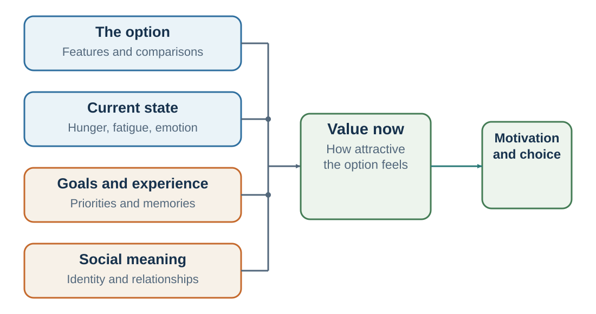

7 Value Is Constructed
How options become worth pursuing, avoiding, or protecting
Learning goals
- Distinguish formal utility from psychological valuation.
- Explain emotion as a value signal rather than the opposite of reason.
- Describe how self-relevance and social relevance change value.
- Use valuation analysis to separate integral emotion from incidental spillover.
Earlier, utility was introduced as subjective value. The rational choice model assumes that people have preferences, form beliefs, and choose the feasible option that best satisfies their preferences. Utility is the formal language for representing what the decision-maker values.
But in real life, value is not simply waiting inside us like a fixed number attached to each option. Value is often constructed in the moment. It depends on what we notice, what we compare, what we expect, what state we are in, what goal is active, and what identity feels relevant.
Imagine walking past a bakery in the afternoon. You smell fresh bread and cinnamon. Suddenly, the pastry in the window has value. Ten minutes earlier, you were not thinking about it. Now you can almost taste it. The pastry did not change. Your state changed. The cue changed. Attention changed. Valuation changed.
Now imagine receiving an invitation from a prestigious organization to give a talk. One person sees status, recognition, professional opportunity, and personal meaning. Another sees travel, anxiety, preparation time, and disruption. The invitation is the same. The value is not.
Valuation is the process through which the mind assigns subjective significance to options and outcomes. In psychology and neuroscience, valuation refers to how the brain integrates expected benefits, costs, risks, needs, goals, emotions, memories, social meanings, and bodily states into a sense of “worth it” or “not worth it.”
Modern neuroeconomics has shown that valuation depends on distributed systems rather than a single “value center.” Regions such as the ventromedial prefrontal cortex, orbitofrontal cortex, ventral striatum, posterior cingulate cortex, and related networks are often involved when people evaluate options, rewards, and trade-offs (Bartra et al., 2013; Clithero & Rangel, 2014; Levy & Glimcher, 2012; Rangel et al., 2008). The ventromedial prefrontal cortex is often associated with integrating multiple attributes into subjective value, while the ventral striatum is strongly involved in reward anticipation, motivation, and learning.
These brain findings should be interpreted carefully. It is too simple to say that one brain region “is” value, pleasure, or desire. The brain works through networks, and the same region can participate in different processes depending on the task. Still, the evidence supports an important idea: different kinds of goods can be compared because the brain translates many attributes into forms of subjective value that guide choice.
This is what makes difficult comparison possible. A person choosing between two jobs is not comparing salary with salary alone. They are comparing salary, status, autonomy, learning, location, culture, family time, risk, identity, and future options. A patient choosing a treatment compares survival probability, side effects, pain, dignity, family burden, uncertainty, and hope. A manager choosing a strategy compares profit, reputation, employee morale, organizational identity, and long-term positioning.
Valuation compresses many dimensions into action readiness.
But valuation is not always conscious. Pessiglione and colleagues (2007) showed that subliminal monetary cues could influence how much physical effort participants exerted. Even when participants were not consciously aware of the reward cue, higher rewards increased effort. This suggests that motivational systems can translate reward information into action without full conscious awareness.
Purchasing studies show similar patterns. Knutson and colleagues (2007) found that neural responses associated with anticipated gain and anticipated pain of paying helped predict whether people would buy products. Buying was not simply a calculation of product features and price. It involved attraction, anticipated pleasure, cost, and the emotional experience of paying.
Valuation also depends on attention. Attention does not merely determine what information enters the mind; it changes the value computation itself. If a decision-maker focuses on salary, the high-paying job becomes more attractive. If they focus on autonomy, the start-up becomes more attractive. If they focus on family time, both jobs may look different. In choice experiments, gaze and attention can influence preferences: people are more likely to choose items they look at longer, and attention can amplify the weight of attended attributes (Armel et al., 2008; Krajbich et al., 2010; Shimojo et al., 2003).
This means that value is not only in the option. Value is partly in the interaction between the option and the mind attending to it.
A useful question for any important decision is therefore:
Which features of this option are receiving attention, and which features are being neglected?
Emotion tells the mind what matters

Many people think of emotion as the enemy of rationality. This is understandable. Fear can exaggerate danger. Anger can produce rash action. Desire can narrow attention. Shame can distort self-evaluation. Excitement can make risks look smaller than they are.
But emotion is not the opposite of rationality. Emotion is central to valuation.
Prediction tells us what might happen. Emotion helps tell us why it matters.
A person who feels fear around a decision is not merely being irrational. Fear may signal possible loss, threat, embarrassment, danger, or uncertainty. A person who feels anger may be registering unfairness or violation. A person who feels guilt may be detecting inconsistency with moral standards. A person who feels pride may be sensing achievement or identity. A person who feels love may be recognizing attachment. A person who feels regret may be noticing the value of a path not taken.
Damasio’s work on patients with damage affecting emotion-related decision processes challenged the idea that reason works best without feeling. Some patients could reason abstractly and discuss options, yet struggled to make practical life decisions because options lacked emotional significance (Damasio, 1994). Bechara and colleagues (1997) developed the Iowa Gambling Task to study how people learn from reward and punishment. Patients with ventromedial prefrontal damage often failed to develop normal anticipatory emotional signals and continued choosing disadvantageous options even when the pattern harmed them.
The lesson is not that emotion always improves decisions. The lesson is that reason alone does not determine what is worth doing. A purely factual prediction cannot choose between outcomes unless something assigns value to them.
The somatic marker hypothesis proposes that bodily and emotional signals become linked to expected outcomes and help guide choice (Damasio, 1994). When a possible action is associated with danger, loss, or reward, the body may generate signals that bias attention and behavior. These signals can be useful shortcuts, especially when full calculation is impossible. They can also mislead when they are based on irrelevant associations or outdated learning.
The idea that emotion guides risk perception is also central to the “risk as feelings” framework. Loewenstein and colleagues (2001) argued that decisions under risk are shaped not only by cognitive estimates of probability and outcome, but also by immediate feelings such as fear, dread, anxiety, and excitement. This helps explain why a statistically small but vivid risk can dominate judgment, while a statistically larger but familiar or delayed risk may be ignored.
The affect heuristic describes a similar process. Slovic and colleagues (2002) argued that people often rely on their positive or negative feelings toward an object or activity when judging its risks and benefits. If something feels good, its benefits tend to seem high and its risks low. If something feels bad, its risks tend to seem high and its benefits low.
This pattern appears in many domains. A technology associated with progress may be judged as beneficial and safe. A technology associated with dread may be judged as risky and less beneficial. A company that people admire may receive the benefit of the doubt. A disliked group may have its actions interpreted more negatively. A familiar medical procedure may feel safer than an unfamiliar one even when the actual risk comparison is more complex.
Emotion also affects judgment in different ways depending on the emotion. Lerner and Keltner (2001) found that fear and anger have different effects on risk perception. Fear tends to be associated with pessimistic risk assessments and avoidance. Anger, by contrast, can be associated with more optimistic risk assessments and approach. Lerner and colleagues’ appraisal-tendency framework argues that different emotions carry different appraisals of certainty, control, responsibility, and anticipated effort, which then influence judgments and choices (Lerner et al., 2015).
This matters in organizations. A fearful leadership team may become overly cautious. An angry team may underestimate risk and move aggressively. A proud team may ignore warning signs. A guilty team may overcorrect. A disgusted team may reject options without analysis. An excited team may overvalue upside.
The answer is not to remove emotion. The answer is to identify what emotion is doing.
When facing an important decision, ask:
What am I feeling? Is this feeling about value or probability? Is the feeling relevant to the decision? Is it caused by the option itself, or by fatigue, social pressure, recent experience, or identity threat? Would I feel the same way tomorrow? Would I advise someone else to treat this feeling as evidence?
Emotion is essential for knowing what matters. It becomes dangerous when it silently impersonates evidence about what is likely.
The self changes value
People do not evaluate options as detached observers. They evaluate them in relation to the self.
Self-relevance changes attention, memory, emotion, and value. Information connected to the self is more likely to capture attention and be remembered. The self-reference effect shows that information processed in relation to oneself is remembered better than information processed in other ways (Rogers et al., 1977). Neuroimaging studies have linked self-referential processing to medial prefrontal and default network regions (Kelley et al., 2002; Northoff et al., 2006).
Everyday examples are easy to find. You notice your own name in a noisy room. You scan a group photo for yourself. After buying a particular car, you notice that model everywhere. A comment about “people like you” feels more important than a general statement. A criticism of your profession, university, nationality, religion, political group, or company may feel personal even when it is abstract.
Self-relevance increases value. A mug is worth more when it is my mug. A project matters more when it is my project. A company strategy feels different when it affects my team. A public issue feels different when it touches my identity. A criticism feels different when it is criticism of me.
The endowment effect, which will be discussed more fully in Chapter 15 on framing and reference points, shows that ownership can increase valuation. Kahneman, Knetsch, and Thaler (1990) found that people often demanded more money to give up an object they owned than they would have paid to acquire it. Ownership changes value partly because the object becomes incorporated into the self or reference point.
Self-relevance can motivate effort and persistence. When a goal is tied to identity—“I am a scientist,” “I am a teacher,” “I am a good parent,” “I am an honest person,” “I am someone who finishes what I start”—actions supporting that identity become more valuable. Identity-based motivation theory argues that identities shape what people attend to, how they interpret difficulty, and which actions feel congruent with who they are (Oyserman, 2009).
But self-relevance can also distort judgment. When an idea becomes part of the self, evidence against it may feel threatening. A founder may overvalue their product because it represents years of effort and identity. A manager may defend a strategy because it was “my initiative.” A student may avoid feedback because it threatens the identity of being smart. A political belief may become resistant to evidence because it signals group membership.
This is why self-relevance is both fuel and filter. It gives decisions energy, but it can also narrow what the decision-maker is willing to see.
A useful question is:
Is this option valuable because it serves my goals, or because it protects my self-image?
The answer is not always obvious. But asking the question opens space for reflection.
Other people enter the value calculation
Value is also social. Human beings care deeply about approval, belonging, status, respect, fairness, reputation, and social meaning. We are not isolated calculators who care only about private material payoff.
Social approval can feel rewarding. Neuroimaging studies suggest that social acceptance, positive reputation, and approval can engage reward-related systems (Izuma et al., 2008; Korn et al., 2012). Social rejection, exclusion, and humiliation can feel painful. Eisenberger, Lieberman, and Williams (2003) found that social exclusion activated regions associated with distress, including the dorsal anterior cingulate cortex and anterior insula. Although the precise overlap between social pain and physical pain has been debated, the broader point remains: social experience has motivational force (Eisenberger, 2012).
This helps explain why decisions often change in public. A person may choose differently when observed. A student may ask fewer questions when peers are watching. A manager may reject uncertainty to appear decisive. A consumer may buy a brand that signals taste or status. A negotiator may refuse a reasonable offer because accepting it would feel humiliating.
Status is especially powerful. Humans are sensitive to rank, respect, prestige, and relative position. Status can motivate achievement and contribution, but it can also distort valuation. A job may become attractive because it impresses others. A purchase may become valuable because it signals belonging. A business strategy may be chosen because it makes leaders appear bold. A policy may be rejected because it seems like losing face.
Affiliation also shapes value. People value belonging, friendship, team identity, and being part of something larger than themselves. Deci and Ryan’s self-determination theory identifies relatedness, along with autonomy and competence, as a basic psychological need (Deci & Ryan, 2000). Belongingness theory similarly argues that humans have a strong need for stable, positive social bonds (Baumeister & Leary, 1995).
This means that social context can change what an option is worth. Working late may feel burdensome alone but meaningful when done for a trusted team. A difficult sacrifice may feel worthwhile when it supports family. A modest salary may be acceptable in a community of shared purpose but not in a culture of status competition. A decision may feel right because it preserves belonging, even if it is privately costly.
Social value also explains why fairness matters. People often reject outcomes that feel unfair, even at personal cost. This topic will be developed later in the social-mind and negotiation chapters, but it belongs here as a preview: valuation includes moral and relational meaning, not only material payoff.
Social value can be beneficial. It supports cooperation, trust, loyalty, care, and moral behavior. But it can also lead people to chase approval, conform to harmful norms, avoid necessary conflict, or make decisions for appearance rather than substance.
A useful decision question is:
Would I value this option the same way if no one else knew I chose it?
The answer can reveal the role of social value.
Motives change the decision landscape
The same person can value the same option differently depending on which motive is active.
A hungry person values food differently from a full person. A frightened person values safety differently from a relaxed person. A lonely person values social contact differently from someone who feels secure. A status-conscious person values recognition differently from someone focused on mastery. A parent values risk differently when thinking about their child. A tired person values convenience differently from a rested person.
This does not mean preferences are random. It means humans have multiple motivational systems. Which motive is active changes the decision landscape.
Motivational psychology has offered many frameworks for understanding human goals. Drive theories emphasized biological needs such as hunger and thirst (Hull, 1943). Self-determination theory emphasizes autonomy, competence, and relatedness as basic psychological needs (Deci & Ryan, 2000). Evolutionary approaches emphasize recurring adaptive challenges such as self-protection, disease avoidance, affiliation, status, mate acquisition, mate retention, and kin care (Kenrick et al., 2010). These motives are not rigid steps in a ladder. They are overlapping systems that become more or less salient depending on context.
When a motive becomes active, it changes attention and value. Fear increases the value of safety. Disgust increases the value of purity and avoidance. Romantic interest can increase the value of status, distinctiveness, or attractiveness. Affiliation increases the value of belonging. Status motives increase sensitivity to rank and recognition. Care motives increase attention to vulnerability and protection.
Research by Griskevicius and colleagues illustrates how motives change preferences. In one set of studies, different emotional and motivational states changed which persuasive appeals worked. Fear increased the appeal of social proof, while romantic desire increased the appeal of distinctiveness and standing out (Griskevicius et al., 2006, 2009). The same museum could be attractive because “many people visit” or because it helps someone “stand out,” depending on the active motive.
Mating-related cues can also change valuation and patience. Wilson and Daly (2004) found that exposure to attractive opposite-sex faces led men to discount the future more steeply, choosing smaller immediate rewards over larger delayed ones. Roney (2003) found that men exposed to potential mates reported greater valuation of wealth, ambition, and status-related traits. These effects do not imply conscious strategy. They show that cues can shift motivational priorities.
Hunger provides a simpler example. Read and van Leeuwen (1998) found that current hunger influenced choices for future snacks. People in a “hot” state often mispredict what they will want in a “cold” state. Loewenstein (1996) called this the hot-cold empathy gap: people underestimate how much preferences and judgments change across visceral states such as hunger, pain, craving, sexual arousal, fear, anger, or fatigue.
This matters because many decisions are made in states that will not last. People shop while hungry, send messages while angry, make promises while inspired, accept deadlines while optimistic, agree to favors while socially pressured, and choose long-term paths while temporarily anxious or status-focused. Later, in another state, the choice may no longer fit.
A useful decision practice is to revisit important decisions in more than one state. Do not choose only while excited, afraid, tired, hungry, socially pressured, or angry. Sleep on major choices. Ask how the decision looks when calm, rested, and removed from immediate cues. Ask whether a temporary motive is making one value dominate all others.
This does not mean we should distrust motives. Motives are part of life. Safety, status, affiliation, care, curiosity, autonomy, and meaning all matter. The point is to notice which motive is currently steering valuation.
The most useful question in this chapter may be:
Which motive is making this option valuable right now?
Using valuation wisely
Valuation is necessary. Without it, decision-making would have no direction. But because valuation is automatic, state-dependent, self-relevant, social, and motivationally flexible, it needs discipline.
The first discipline is to separate value from evidence. “I care about this” is not the same as “this will happen.” “This feels wrong” is not the same as “this is unlikely to work.” “This option excites me” is not the same as “this option has high expected value.” Chapter 1 introduced the distinction between prediction and valuation. This chapter shows why the distinction is difficult: value arrives quickly and feels like truth.
The second discipline is to ask what feature is driving value. Is the job attractive because of learning, salary, prestige, social approval, fear of missing out, or genuine fit? Is the product attractive because of usefulness, design, identity, scarcity, or wanting? Is the strategy attractive because of long-term value or because it makes leaders look bold?
The third discipline is to compare wanting with likely experience. Strong wanting can be informative, but it is not proof of lasting satisfaction. Before making major choices, ask whether the option will produce experienced value or mainly anticipated value, social value, or relief.
The fourth discipline is to choose in a representative state. If the decision affects your ordinary life, do not make it only in an extraordinary state. Do not evaluate a career only after public praise or public humiliation. Do not evaluate a purchase only under scarcity pressure. Do not evaluate a relationship only during conflict or infatuation. Do not evaluate a strategy only in panic.
The fifth discipline is to use outside perspectives. Other people may see which motives are active when we cannot. A trusted friend may notice that status is driving a career decision. A colleague may notice that fear is driving risk avoidance. A coach may notice that a leader is protecting identity rather than evaluating evidence.
The sixth discipline is to design environments that support better valuation. If what is visible becomes valuable, make long-term goals visible. If social meaning changes value, create cultures where good decisions are respected more than flashy decisions. If attention changes value, design meetings, dashboards, and decision templates that direct attention to what matters.
This is especially important in organizations. Organizations create value environments. What gets measured becomes important. What leaders praise becomes valuable. What gets promoted becomes desirable. What gets punished becomes avoided. If a company celebrates only speed, employees undervalue reflection. If it celebrates only revenue, they may undervalue trust. If it celebrates only confidence, they may undervalue accuracy. If it punishes every failed experiment, employees undervalue learning.
Leaders are architects of valuation.
So are teachers, doctors, designers, parents, negotiators, and policymakers. A teacher can make curiosity valuable. A doctor can make preventive action meaningful rather than frightening. A designer can make healthy choices salient. A negotiator can make cooperation feel respectful rather than weak. A parent can make effort more valuable than effortless success.
The ethical challenge is clear. To shape valuation is to influence choice. This can support autonomy and well-being, or it can manipulate attention and desire. Ethical valuation design helps people act on values they would endorse under reflection. Manipulative valuation design exploits temporary motives, insecurities, cravings, or social pressures for someone else’s gain.
The chapter ends with two bridges. Chapter 8 examines expectations: beliefs that can change attention, action, and feedback. Part II then shows how shortcuts and context shape judgment; Chapters 18–21 follow the choice into explanation, habit, self-control, and behavior design.
Before turning to habit, however, we need to examine a special kind of valuation loop: expectations. Sometimes beliefs do not merely describe reality. They help create it. When a teacher expects a student to succeed, when a patient expects side effects, when a manager expects employees to be irresponsible, or when a person expects rejection, those expectations can change attention, emotion, behavior, and feedback. Predictions can become causes.
Chapter 8 examines how expectations can become part of the causal system.
| Question | What it diagnoses | Typical risk |
|---|---|---|
| What am I feeling? | The current value signal. | Treating emotion as probability. |
| What feature has my attention? | Attribute weighting in the moment. | Ignoring a quiet but important objective. |
| Do I want this, or expect to like it? | Motivational pull versus experienced value. | Choosing the cue rather than the outcome. |
| Whose approval or identity is involved? | Social and self-relevance. | Borrowing another audience’s values. |
| What changes if my state changes? | Hunger, fatigue, threat, or mood dependence. | Mistaking a temporary state for a stable preference. |
Key ideas
- Subjective value is not a fixed price tag inside an option. It is constructed from expected consequences, attention, bodily state, emotion, memory, identity, social meaning, and current motives.
- Distinguish formal utility from psychological valuation.
- Explain emotion as a value signal rather than the opposite of reason.
- Describe how self-relevance and social relevance change value.
Study and practice
How would you distinguish formal utility from psychological valuation?
How would you explain emotion as a value signal rather than the opposite of reason?
What evidence and mechanism would you use to describe how self-relevance and social relevance change value?
References cited in this chapter
Armel, K. C., Beaumel, A., & Rangel, A. (2008). Biasing simple choices by manipulating relative visual attention. Judgment and Decision Making, 3(5), 396–403.
Bartra, O., McGuire, J. T., & Kable, J. W. (2013). The valuation system: A coordinate-based meta-analysis of BOLD fMRI experiments examining neural correlates of subjective value. NeuroImage, 76, 412-427.
Baumeister, R. F., & Leary, M. R. (1995). The need to belong: Desire for interpersonal attachments as a fundamental human motivation. Psychological Bulletin, 117(3), 497–529.
Clithero, J. A., & Rangel, A. (2014). Informatic parcellation of the network involved in the computation of subjective value. Social Cognitive and Affective Neuroscience, 9(9), 1289–1302.
Damasio, A. R. (1994). Descartes’ error: Emotion, reason, and the human brain. Putnam.
Deci, E. L., & Ryan, R. M. (2000). The “what” and “why” of goal pursuits: Human needs and the self-determination of behavior. Psychological Inquiry, 11(4), 227-268.
Eisenberger, N. I. (2012). The pain of social disconnection: Examining the shared neural underpinnings of physical and social pain. Nature Reviews Neuroscience, 13(6), 421–434.
Eisenberger, N. I., Lieberman, M. D., & Williams, K. D. (2003). Does rejection hurt? An fMRI study of social exclusion. Science, 302(5643), 290–292.
Griskevicius, V., Goldstein, N. J., Mortensen, C. R., Cialdini, R. B., & Kenrick, D. T. (2006). Going along versus going alone: When fundamental motives facilitate strategic nonconformity. Journal of Personality and Social Psychology, 91(2), 281-294.
Griskevicius, V., Goldstein, N. J., Mortensen, C. R., Sundie, J. M., Cialdini, R. B., & Kenrick, D. T. (2009). Fear and loving in Las Vegas: Evolution, emotion, and persuasion. Journal of Marketing Research, 46(3), 384-395.
Hull, C. L. (1943). Principles of behavior. Appleton-Century-Crofts.
Izuma, K., Saito, D. N., & Sadato, N. (2008). Processing of social and monetary rewards in the human striatum. Neuron, 58(2), 284–294.
Kahneman, D., Knetsch, J. L., & Thaler, R. H. (1990). Experimental tests of the endowment effect and the Coase theorem. Journal of Political Economy, 98(6), 1325–1348.
Kelley, W. M., Macrae, C. N., Wyland, C. L., Caglar, S., Inati, S., & Heatherton, T. F. (2002). Finding the self? An event-related fMRI study. Journal of Cognitive Neuroscience, 14(5), 785–794.
Kenrick, D. T., Griskevicius, V., Neuberg, S. L., & Schaller, M. (2010). Renovating the pyramid of needs: Contemporary extensions built upon ancient foundations. Perspectives on Psychological Science, 5(3), 292–314.
Korn, C. W., Prehn, K., Park, S. Q., Walter, H., & Heekeren, H. R. (2012). Positively biased processing of self-relevant social feedback. Journal of Neuroscience, 32(47), 16832–16844.
Krajbich, I., Armel, C., & Rangel, A. (2010). Visual fixations and the computation and comparison of value in simple choice. Nature Neuroscience, 13(10), 1292–1298.
Lerner, J. S., & Keltner, D. (2001). Fear, anger, and risk. Journal of Personality and Social Psychology, 81(1), 146–159.
Lerner, J. S., Li, Y., Valdesolo, P., & Kassam, K. (2015). Emotion and decision making. Annual Review of Psychology, 66, 799–823.
Lerner, J. S., Li, Y., Valdesolo, P., & Kassam, K. S. (2015). Emotion and decision making. Annual Review of Psychology, 66, 799–823.
Levy, D. J., & Glimcher, P. W. (2012). The root of all value: A neural common currency for choice. Current Opinion in Neurobiology, 22(6), 1027–1038.
Loewenstein, G. (1996). Out of control: Visceral influences on behavior. Organizational Behavior and Human Decision Processes, 65(3), 272–292.
Northoff, G., Heinzel, A., de Greck, M., Bermpohl, F., Dobrowolny, H., & Panksepp, J. (2006). Self-referential processing in our brain: A meta-analysis of imaging studies on the self. NeuroImage, 31(1), 440–457.
Oyserman, D. (2009). Identity-based motivation: Implications for action-readiness, procedural-readiness, and consumer behavior. Journal of Consumer Psychology, 19(3), 250–260.
Rangel, A., Camerer, C., & Montague, P. R. (2008). A framework for studying the neurobiology of value-based decision making. Nature Reviews Neuroscience, 9(7), 545-556.
Read, D., & van Leeuwen, B. (1998). Predicting hunger: The effects of appetite and delay on choice. Organizational Behavior and Human Decision Processes, 76(2), 189–205.
Rogers, T. B., Kuiper, N. A., & Kirker, W. S. (1977). Self-reference and the encoding of personal information. Journal of Personality and Social Psychology, 35(9), 677–688.
Roney, J. R. (2003). Effects of visual exposure to the opposite sex: Cognitive aspects of mate attraction in human males. Personality and Social Psychology Bulletin, 29(3), 393–404.
Shimojo, S., Simion, C., Shimojo, E., & Scheier, C. (2003). Gaze bias both reflects and influences preference. Nature Neuroscience, 6(12), 1317–1322.
Wilson, M., & Daly, M. (2004). Do pretty women inspire men to discount the future? Proceedings of the Royal Society B: Biological Sciences, 271(Suppl. 4), S177–S179.